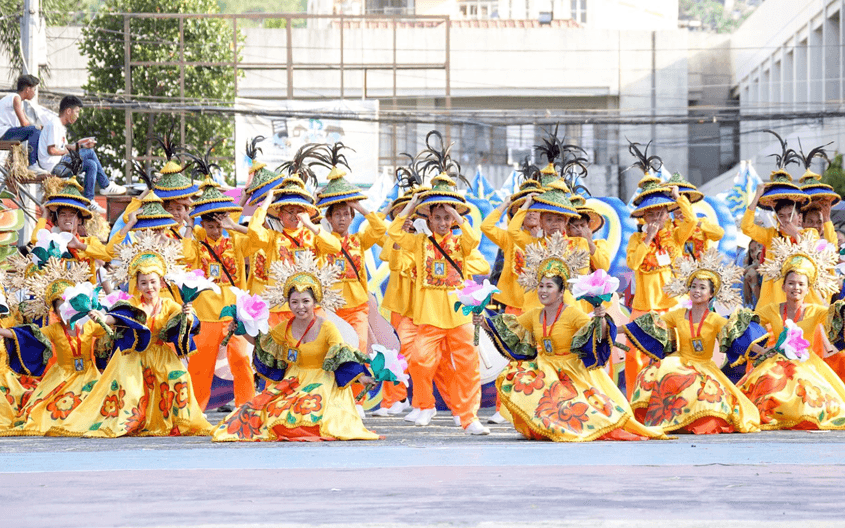
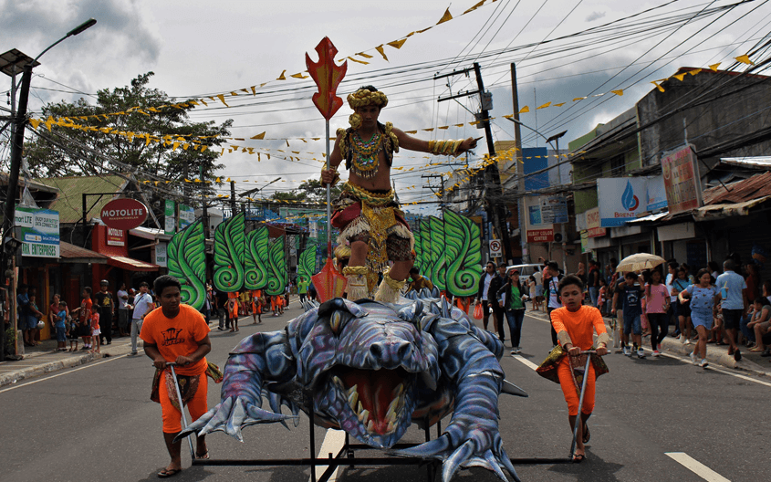

Legazpi City was named after Miguel Lopez de Legazpi, the Spanish
conquistador who conquered the Philippines in 1565. The place was named as such
by the Spaniards as such to Legazpi was named after Miguel López de Legazpi, the
Spanish conquistador who conquered the Philippine islands in 1565, and whose family
name came from Legazpi, a town in Guipuzcoa, Spain.
Historically, the city was named Legazpi, to perpetuate to the memory
of Adelantado Don Miguel Lopez de Legazpi. This was the agreement made between the
original inhabitants of the place and the Spaniards during the former’s quest for
autonomy. It took them 21 years, in which they sought the help and support of the
Spaniards, then living in the town. As a sign of gratitude, the people readily accepted
the name, which was also then proposed by the Spaniards upon fulfillment of their efforts.
| Magayon Festival | IBALONG FESTIVAL |
|---|---|
|  |  |
| Magayon Festival Held every month of May, Magayon Festival is derived from the popular legend of Mayon Volcano to honor the province's bounty and beauty. One of the highlights of this event is the stage reenactment of the tragic love story of Daragang Magayon and Panganoron whose fatal deaths gave birth to the volcano | Ibalon Festival A celebration in recognition of the socio-historic-cultural heritage of Bicolanos as based on the Ibalong Epic showcasing the bravery and strength in character of three heroes Baltog, Handyong, and Bantong as they fought against the villains Tandayog, Oryol, Rabot, and other wild monsters that threatened the place and orderliness of their place. |